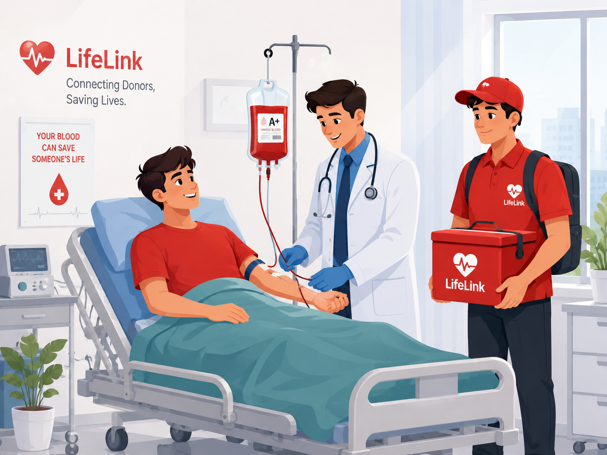

LifeLink is an emergency blood & plasma network helping hospitals instantly locate nearby verified donors during critical situations. Every second matters.

Get notified instantly when blood is urgently needed.
Connect donors and recipients based on location and blood group.
Designed to support hospitals and blood banks.
Your personal information is protected with strong security.
Designed to reduce the time it takes to find life-saving blood.
Instantly locate nearby blood donors using live maps.
Notify hundreds of matching donors within seconds.
Hospitals can manage requests, donors and blood inventory.
Every donor profile is verified to improve reliability.
Every minute matters during a medical emergency. LifeLink aims to reduce the time required to connect hospitals with voluntary blood donors through a secure, modern and reliable platform.
Hospitals can quickly search for compatible blood donors without unnecessary delays.
Authentication and verification help create a safer community for both donors and hospitals.
Find available donors based on their location to improve emergency response time.
Built to encourage voluntary blood donation and strengthen local healthcare support.
Create your account as a donor or healthcare organization.
Complete your profile and provide the required details.
Hospitals can search and contact nearby compatible donors.
LifeLink is being developed with a single purpose: helping reduce the time required to connect people in urgent need of blood with willing donors.
We believe technology can improve emergency healthcare by creating faster, smarter and more transparent communication between donors and hospitals.
Building confidence through transparency and verified information.
User information should remain secure and protected.
Encouraging people to support each other through voluntary blood donation.
Using modern technology to improve emergency healthcare services.
Future versions of LifeLink aim to introduce intelligent donor recommendations, real-time emergency notifications, blood inventory management, and AI-powered analytics to assist healthcare organizations.
Whether you're a donor, a hospital, or someone who wants to make a difference, LifeLink welcomes you.